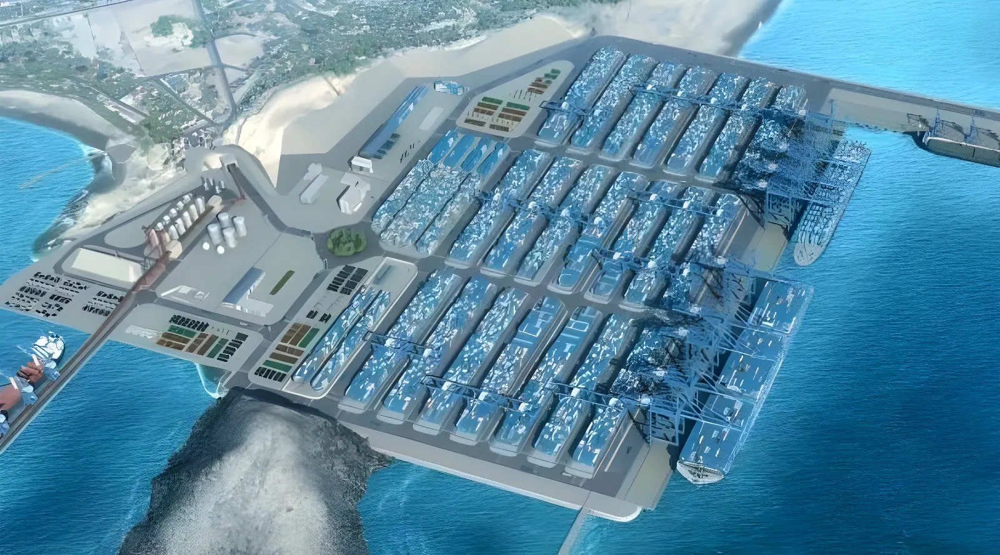

Le 14 novembre 2024, Xi Jinping inaugurait en grande pompe le mégaport de Chancay, à 80 kilomètres au nord de Lima. Construit par le géant d'État COSCO Shipping et financé à hauteur de 3,5 milliards de dollars, ce terminal est bien plus qu'une infrastructure portuaire : il incarne la stratégie chinoise d'enracinement en Amérique du Sud, rebat les cartes du commerce mondial dans le Pacifique et place le Pérou au cœur d'une rivalité sino-américaine désormais assumée.
Le port de Chancay est né d'une alliance entre COSCO Shipping Ports, filiale du géant maritime d'État chinois fondé en 1961, et Volcan Compañía Minera, groupe péruvien dont l'anglo-suisse Glencore est l'actionnaire majoritaire. COSCO détient 60 % des parts, Volcan 40 %. L'investissement total atteint 3,5 à 3,6 milliards de dollars. Les travaux, lancés en 2021, ont duré huit ans de chantier intensif. Le site couvre 141 hectares sur la côte centrale péruvienne et s'inscrit pleinement dans l'Initiative « la Ceinture et la Route » (BRI), le grand programme d'infrastructures mondiales lancé par Pékin en 2013.
La géographie a tout autant dicté le choix du site que la politique. La baie de Chancay offre des fonds marins naturellement à pic, avec un tirant d'eau atteignant 17 à 17,8 mètres — deux mètres de plus que le port de Callao à Lima — permettant d'accueillir les porte-conteneurs de dernière génération capables de transporter plus de 18 000 boîtes. Quatre quais opérationnels dès l'ouverture, avec une extension prévue jusqu'à 15 quais à terme, portant la capacité totale à 5 millions d'équivalents vingt pieds (EVP) par an.
Xi Jinping n'a pas inauguré Chancay depuis le chantier, mais depuis le palais présidentiel de Lima, où il se trouvait pour le sommet de la Coopération économique Asie-Pacifique (APEC) réunissant 21 pays représentant 60 % du PIB mondial. La présidente péruvienne Dina Boluarte était à ses côtés. La cérémonie était virtuelle, mais le message était bien réel. Xi Jinping a évoqué « la naissance d'un nouveau corridor terre-mer entre l'Asie et l'Amérique latine » et convoqué le symbole des Chemins incas : « Aujourd'hui, le port de Chancay devient un nouveau point de départ pour les Chemins incas de la nouvelle ère. » La formule « De Chancay à Shanghai » est depuis entrée dans le langage courant au Pérou.
L'enjeu logistique est concret : le temps de transit entre Shanghai et Chancay est ramené à 25–30 jours, contre 35–40 jours via les ports mexicains ou américains. Cette réduction de 10 à 15 jours ouvre la voie à l'exportation de produits périssables — avocats, quinoa, asperges, raisins — que les délais antérieurs rendaient impossibles. Pour les matières premières non périssables, c'est la rentabilité de toute la chaîne logistique qui s'en trouve améliorée.
Lancement officiel du chantier. COSCO Shipping Ports et Volcan Compañía Minera s'associent pour construire le terminal.
Inauguration par Xi Jinping lors du sommet APEC à Lima. Concession de 30 ans accordée à COSCO pour l'exploitation.
Le port enregistre plus de 1 037 millions de soles de collecte douanière. Premières frictions entre COSCO et l'Ositran (régulateur péruvien).
Un tribunal péruvien limite les pouvoirs de surveillance de l'Ositran sur le terminal. Washington réagit officiellement.
Les États-Unis dénoncent publiquement la « perte de souveraineté » du Pérou sur son propre port. Pékin parle de « campagne de diffamation flagrante ».
Chancay se présente aussi comme une vitrine technologique. Le site intègre la 5G pour la coordination en temps réel des opérations, des grues entièrement automatisées et des véhicules autonomes pour la manutention des conteneurs. Il devient le premier port d'Amérique du Sud à fonctionner en continu 24 heures sur 24, 7 jours sur 7, supprimant les temps d'arrêt logistiques qui pénalisaient les ports traditionnels de la région. Les grues fonctionnent à l'électricité, produite par l'industrie hydroélectrique péruvienne, ce qui permet à COSCO de revendiquer une empreinte environnementale réduite. Des systèmes de recyclage des eaux usées complètent ce tableau.
Derrière les discours de coopération, la stratégie de Pékin poursuit des objectifs précis. Sécuriser les approvisionnements en matières premières : la Chine est le premier consommateur mondial de cuivre, dont le Pérou est le troisième producteur mondial. Elle est aussi le plus grand importateur de lithium, minerai stratégique pour la transition énergétique et la production de véhicules électriques. Les importations chinoises de minerais et concentrés de cuivre ont atteint 28,114 millions de tonnes en 2024, en hausse de 2,1 % sur un an malgré la crise immobilière. Compenser le déficit alimentaire : la Chine ne peut nourrir sa population avec ses seules ressources agricoles. Le raccourcissement des routes vers l'Amérique du Sud ouvre l'accès à des produits frais jusqu'ici inaccessibles. Contourner les États-Unis : en créant une connexion directe Pacifique Sud–Asie, Pékin court-circuite les nœuds logistiques contrôlés par Washington — ports mexicains, canal de Panama — et réduit sa dépendance à des infrastructures sous influence américaine.
L'euphorie inaugurale a rapidement laissé place aux tensions. En janvier 2026, un tribunal péruvien de première instance a rendu une décision limitant les prérogatives de l'Ositran — l'organisme national de régulation des infrastructures de transport — à l'intérieur du terminal de Chancay. La directrice de l'Ositran, Veronica Zambrano, a dénoncé une situation inédite : COSCO serait ainsi la seule entreprise publique étrangère exemptée du contrôle de l'État péruvien sur son propre territoire. L'Ositran a annoncé son intention de faire appel.
Washington a saisi l'occasion. L'administration américaine a officiellement exprimé ses inquiétudes face à cette décision, y voyant la confirmation que le Pérou aurait perdu le contrôle de son propre port au profit de « propriétaires chinois aux pratiques prédatrices ». Pékin a répondu en dénonçant une « campagne de diffamation flagrante ». Le Pérou se retrouve ainsi coincé entre deux puissances : sommé de choisir un camp alors qu'il a précisément construit sa stratégie sur une neutralité calculée.
« De Chancay à Shanghai, nous assistons à la naissance d'un nouveau corridor terre-mer entre l'Asie et l'Amérique latine. »
— Xi Jinping, lors de l'inauguration virtuelle du port, Lima, 14 novembre 2024À Chancay même, la révolution est moins poétique. La ville, qui comptait 50 000 à 60 000 habitants avant le chantier — des pêcheurs artisanaux, des surfeurs, quelques gargotes de ceviche — en comptait 10 000 de plus dès la fin 2025. Cette croissance soudaine a provoqué une tension sur les ressources : eau potable, logement, services. Le prix du mètre carré est passé de 2 dollars à 40 dollars, excluant de fait les familles d'origine. Certains habitants ont été déplacés pour permettre l'expansion des infrastructures, selon Miriam Arce, présidente de l'Association de défense des habitations et de l'environnement. Les 8 000 emplois directs promis par COSCO n'ont pas suffi à compenser le sentiment de dépossession. Et malgré 1 037 millions de soles de recettes douanières générées à fin 2025, le maire de Chancay Juan Álvarez a souligné que ce revenu n'avait en rien profité à la ville.
| Indicateur | Détail |
|---|---|
| Investissement total | 3,5 – 3,6 milliards de dollars |
| Actionnaire majoritaire | COSCO Shipping Ports (60 %, État chinois) |
| Actionnaire minoritaire | Volcan Compañía Minera (40 %) |
| Capacité phase 1 | 1 million de conteneurs / an |
| Capacité finale | 5 millions d'EVP / an (15 quais) |
| Durée de la concession | 30 ans |
| Tirant d'eau | 17 à 17,8 mètres |
| Gain de transit vs routes antérieures | 10 à 15 jours économisés |
Le port de Chancay illustre avec une clarté brutale les contradictions du Pérou d'aujourd'hui. Économiquement dépendant de la Chine pour l'exportation de son cuivre et demain de son lithium, constitutionnellement lié aux États-Unis par des décennies de sécurité partagée, le pays andine ne peut se permettre de choisir un camp sans perdre dans l'autre. La question de la souveraineté sur le terminal portuaire — qui contrôle quoi, sur quel territoire — n'est pas un détail juridique : c'est le nœud de la relation sino-péruvienne pour les trente prochaines années. Le prochain président, investi le 28 juillet 2026, devra trancher ce dilemme dans un pays épuisé par dix ans de crise institutionnelle — sans autorité ni durée pour le faire.
El 14 de noviembre de 2024, Xi Jinping inauguraba con gran pompa el megapuerto de Chancay, a 80 kilómetros al norte de Lima. Construido por el gigante estatal COSCO Shipping y financiado con 3 500 millones de dólares, este terminal es mucho más que una infraestructura portuaria: encarna la estrategia china de arraigo en América del Sur, reordena el comercio mundial en el Pacífico y sitúa al Perú en el corazón de una rivalidad sino-americana ya sin disimulos.
El puerto de Chancay es fruto de una alianza entre COSCO Shipping Ports, filial del gigante marítimo estatal chino fundado en 1961, y Volcan Compañía Minera, grupo peruano cuyo accionista mayoritario es el anglosuizo Glencore. COSCO controla el 60 % de las participaciones y Volcan el 40 %. La inversión total asciende a entre 3 500 y 3 600 millones de dólares. Las obras, iniciadas en 2021, se prolongaron durante ocho años de trabajo intensivo. El emplazamiento cubre 141 hectáreas en la costa central peruana y se inscribe plenamente en la Iniciativa «la Franja y la Ruta» (BRI), el gran programa de infraestructuras mundiales puesto en marcha por Pekín en 2013.
La geografía dictó tanto el lugar como la política. La bahía de Chancay ofrece fondos marinos naturalmente escarpados, con un calado de entre 17 y 17,8 metros —dos metros más que el puerto del Callao en Lima—, capaz de recibir los portacontenedores de última generación con capacidad para más de 18 000 cajas. Cuatro muelles operativos desde la apertura, con una ampliación prevista hasta 15 muelles en el horizonte, lo que elevaría la capacidad total a 5 millones de TEU anuales.
Xi Jinping no inauguró Chancay desde el propio puerto, sino desde el palacio presidencial de Lima, donde se encontraba para la cumbre de la Cooperación Económica Asia-Pacífico (APEC), que reúne a 21 países que representan el 60 % del PIB mundial. La presidenta peruana Dina Boluarte estaba a su lado. La ceremonia fue virtual, pero el mensaje fue bien real. Xi evocó «el nacimiento de un nuevo corredor terrestre-marítimo entre Asia y América Latina» e invocó el símbolo de los Caminos del Inca: «Hoy, el puerto de Chancay se convierte en un nuevo punto de partida para los Caminos del Inca de la nueva era.» La fórmula «De Chancay a Shanghái» ha pasado desde entonces al lenguaje corriente en Perú.
La ventaja logística es concreta: el tiempo de tránsito entre Shanghái y Chancay se reduce a 25-30 días, frente a los 35-40 días por los puertos mexicanos o estadounidenses. Esta reducción de 10 a 15 días abre la puerta a la exportación de productos perecederos —paltas, quinua, espárragos, uvas— que los plazos anteriores hacían imposibles. Para las materias primas no perecederas, es toda la cadena logística la que gana en rentabilidad.
Inicio oficial de las obras. COSCO Shipping Ports y Volcan Compañía Minera se asocian para construir el terminal.
Inauguración por Xi Jinping durante la cumbre APEC en Lima. Concesión de 30 años otorgada a COSCO para la explotación.
El puerto registra más de 1 037 millones de soles en recaudación aduanera. Primeras fricciones entre COSCO y el Ositrán.
Un tribunal peruano limita los poderes de supervisión del Ositrán sobre el terminal. Washington reacciona oficialmente.
Estados Unidos denuncia públicamente la «pérdida de soberanía» del Perú sobre su propio puerto. Pekín habla de «campaña de difamación flagrante».
Chancay se presenta también como un escaparate tecnológico. El emplazamiento integra el 5G para la coordinación en tiempo real de las operaciones, grúas totalmente automatizadas y vehículos autónomos para la manipulación de contenedores. Se convierte así en el primer puerto de América del Sur en operar de forma continua las 24 horas del día, los 7 días de la semana, eliminando los tiempos muertos logísticos que penalizaban a los puertos tradicionales de la región. Las grúas funcionan con electricidad generada por la industria hidroeléctrica peruana, lo que permite a COSCO reivindicar una huella medioambiental reducida. Los sistemas de reciclaje de aguas residuales completan el cuadro.
Detrás de los discursos de cooperación, la estrategia de Pekín persigue objetivos precisos. Asegurar el abastecimiento de materias primas: China es el mayor consumidor mundial de cobre, del que Perú es el tercer productor mundial. Es también el mayor importador de litio, mineral estratégico para la transición energética y la fabricación de vehículos eléctricos. Las importaciones chinas de minerales y concentrados de cobre alcanzaron los 28,114 millones de toneladas en 2024, un 2,1 % más que el año anterior. Compensar el déficit alimentario: China no puede alimentar a su población solo con sus recursos agrícolas. El acortamiento de las rutas hacia América del Sur abre el acceso a productos frescos hasta ahora inaccesibles. Esquivar a Estados Unidos: al crear una conexión directa Pacífico Sur-Asia, Pekín cortocircuita los nodos logísticos controlados por Washington —puertos mexicanos, canal de Panamá— y reduce su dependencia de infraestructuras bajo influencia americana.
La euforia inaugural dejó paso rápidamente a las tensiones. En enero de 2026, un tribunal peruano de primera instancia emitió una resolución que limitaba las prerrogativas del Ositrán —el organismo nacional de regulación de infraestructuras de transporte— dentro del terminal de Chancay. La directora del Ositrán, Verónica Zambrano, denunció una situación inédita: COSCO sería así la única empresa pública extranjera exenta del control del Estado peruano en su propio territorio. El Ositrán anunció su intención de apelar.
Washington aprovechó la ocasión. La administración americana expresó oficialmente su preocupación por esta decisión, viendo en ella la confirmación de que Perú habría perdido el control de su propio puerto en favor de «propietarios chinos con prácticas depredadoras». Pekín respondió denunciando una «campaña de difamación flagrante». Perú queda así atrapado entre dos potencias: instado a elegir bando cuando ha construido precisamente su estrategia sobre una neutralidad calculada.
« De Chancay a Shanghái, somos testigos del nacimiento de un nuevo corredor terrestre-marítimo entre Asia y América Latina. »
— Xi Jinping, inauguración virtual del puerto, Lima, 14 de noviembre de 2024En la propia Chancay, la revolución resulta menos poética. La ciudad, que antes de las obras contaba con entre 50 000 y 60 000 habitantes —pescadores artesanales, surfistas, pequeños restaurantes de ceviche— sumaba 10 000 más a finales de 2025. Este crecimiento repentino ha generado tensiones sobre los recursos: agua potable, vivienda, servicios. El precio del metro cuadrado pasó de 2 a 40 dólares, excluyendo de hecho a las familias de origen. Algunos habitantes han sido desplazados para permitir la expansión de las infraestructuras, según Miriam Arce, presidenta de la Asociación de Defensa de las Viviendas y el Medio Ambiente. Los 8 000 empleos directos prometidos por COSCO no bastaron para compensar el sentimiento de despojo. Y a pesar de los 1 037 millones de soles de ingresos aduaneros generados a finales de 2025, el alcalde de Chancay Juan Álvarez subrayó que ese dinero no había beneficiado en nada a la ciudad.
| Indicador | Detalle |
|---|---|
| Inversión total | 3 500 – 3 600 millones de dólares |
| Accionista mayoritario | COSCO Shipping Ports (60 %, Estado chino) |
| Accionista minoritario | Volcan Compañía Minera (40 %) |
| Capacidad fase 1 | 1 millón de contenedores / año |
| Capacidad final | 5 millones de TEU / año (15 muelles) |
| Duración de la concesión | 30 años |
| Calado | 17 a 17,8 metros |
| Ahorro de tránsito vs. rutas anteriores | 10 a 15 días ganados |
El puerto de Chancay ilustra con claridad brutal las contradicciones del Perú de hoy. Económicamente dependiente de China para exportar su cobre —y mañana su litio—, históricamente vinculado a Estados Unidos en materia de seguridad, el país andino no puede permitirse elegir bando sin perder en el otro. La cuestión de la soberanía sobre el terminal portuario —quién controla qué, en qué territorio— no es un detalle jurídico: es el nudo de la relación sino-peruana para los próximos treinta años. El próximo presidente, investido el 28 de julio de 2026, tendrá que resolver este dilema en un país agotado por diez años de crisis institucional, sin autoridad ni tiempo para hacerlo.